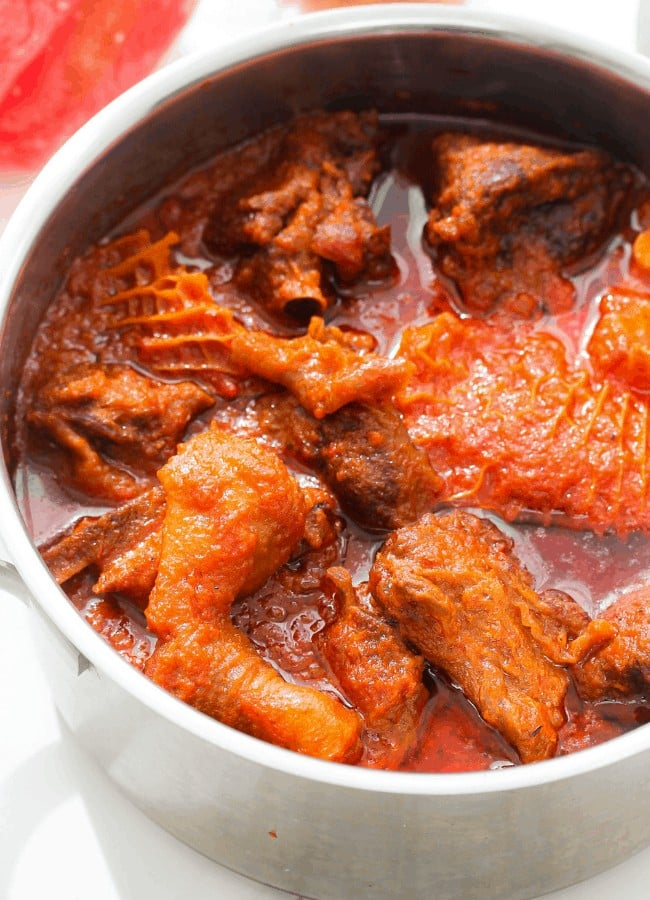

Nigerian Stew

Description
Nigerian stew, aka obe ata, is a staple dish in many Nigerian households.
It forms the base of many Nigerian dishes (jollof rice) and can be served with white rice,
eba, pounded yam,
and more for a complete meal.
However you serve it, this is a satisfying, hearty dinner that celebrates West African cuisine.
Ingredients
- Chick Bullion
- Plum Tomatoes
- Bell Peppers
- Scotch Bonnet
- Tomato Puree/Paste
- Chicken Stock
- Onion
- Sunflower Oil
- Thyme
- Pre-cooked Meat
- Curry Powder
- Salt
Steps
- First, you will need
to prepare the base of the stew. Add scotch bonnets,
red bell pepper, onions and plum tomatoes to a blender and blend until smooth.
- Next, heat vegetable/sunflower oil in a pot.
It should cover the base of the pot.
Once it is hot pour the blended tomato mixture into the pot and bring it to a boil.
- Now it’s time to season the stew.
Add chicken cubes, salt to taste, thyme,
tomato puree and chicken stock. Then stir and
leave to simmer for 10-15 minutes.
- Once the stew is nearly ready you can
add the pre-cooked assorted meat.
Add chicken, beef, tripe, cow foot
and stir well and leave to cook for another
7-10 minutes on low/medium heat.
- Once the stew is done leave it to cool for a few minutes before serving.